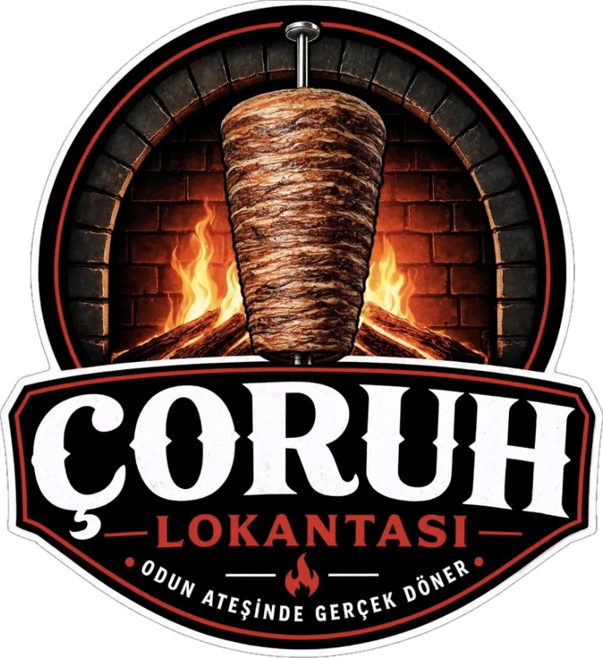
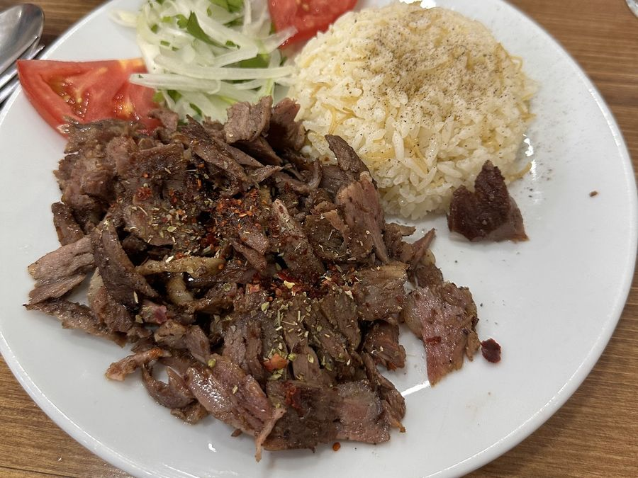

Meşhur
Odun Ateşinde Et Döner
Bayburt’ta döner denince akla gelen adres. Odun ateşinde pişer, porsiyon, pilav üstü ya da iskender olarak servis edilir.

Bayburt Merkez · Cumhuriyet Cd. · Belediye altı
Odun ateşinde pişen meşhur et dönerimiz, her gün taze hazırlanan tencere yemeklerimiz ve sıcak çorbalarımızla; Çoruh’a bakan terasımızda sizi bekliyoruz.
Ustanın tavsiyesi
Misafirlerimizin en çok sorduğu, en çok tekrar istediği tabaklar.
Bayburt’ta döner denince akla gelen adres. Odun ateşinde pişer, porsiyon, pilav üstü ya da iskender olarak servis edilir.

Tane tane pilav, bol döner, yanında söğüş domates ve soğan.

Sabah 6’dan itibaren: mercimek, ezogelin, kesme, işkembe, kelle ve doduk paça.

Toprak kâsede, üstü kızarmış. Yemeğin üstüne demli çayla birlikte.